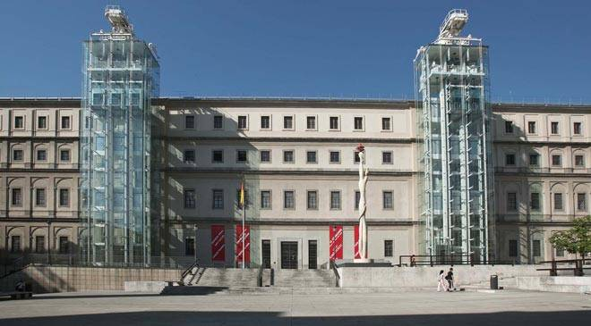

مدينة مدريد العاصمة واحدى اجمل مدن اسبانيا ، تعكس تجسيداً حيّاً للتاريخ القديم، حيث يجد زائروها عدداً مُتنوّع من المعالم التاريخية ذات الأهمية والمتاحف ذات المُقتيات الثمينة وأيضاً القصور المُميّزة بطرازها المعماري اللافت وكذلك المعابد الدينية.
أفضل وقت لزيارة البلد
من شهر مارس حتى مايو ومن شهر سبتمبر حتى أكتوبر
أبرز الأماكن السياحية
حدائق مدريد: خلال بحثك عن أهم الاماكن السياحية في مدريد ، سوف تجد بالطبع أن حدائق مدريد تتربّع على عرشها، فالجميع يهوى التجوّل بين المسطحات الخضراء والاستظلال تحت أغصان الأشجار المُتدلية، تفقّد مجموعتنا لأجمل الحدائق في مدريد.
متحف ريتا صوفيا: يعد متحف رينا صوفيا أحد ابرز اماكن السياحة في مدريد اسبانيا فهو تكملة حديثة لمتحف برادو التاريخي تم افتتاحه رسمياً عام 1992م بأمر الملكة صوفيا. يضم المتحف تشكيلة واسعة من الأعمال الفنية لأشهر الفنانين الاسبان ابرزهم بابلو بيكاسو

حدائق رييرو: تشتهر اسبانيا بحديقة ريتيرو الشهيرة فهي من اجمل المناطق السياحية في مدريد . تمتد الحديقة على مساحات واسعة وتضم العديد من الأنشطة الترفيهية التي تساعد على قضاء وقت ممتع وسط الطبيعة الخلابة والأشجار
كيفية الوصول إليها
يمكن الوصول إلى البلد بواسطة الطائرة، السفينة، القطار، أو السيارة اعتمادًا على موقعك الحالي.